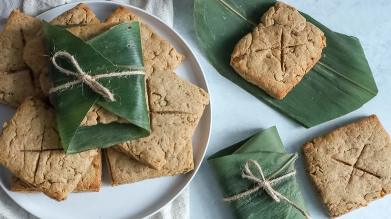

Lembas Bread Recipe

Description
Among the various dishes mentioned in the LOTR trilogy are cakes and tea, rabbit stew, and bacon cooked with mushrooms, but one of the most memorable dishes that was created especially for the series is the lembas bread, a.k.a. elven or waybread, that was given to the fellowship in Lothlórien. Apart from the fact that lembas bread is supposed to be strengthening and long-lasting with a sweet taste and wafer-like texture, we're not given many hints as to possible ingredients. As developer Jessica Morone imagines the recipe, it "has a rich, warm, and slightly sweet flavor profile, with hints of cinnamon and honey complemented by the nutty crunch of walnuts." She also prefers to make hers moist and tender by using oil and heavy cream in the mix, although she says it has "just enough density to make it feel substantial."
Ingredients
- 1 ½ cups all-purpose flour
- 1 cup wheat flour
- 1 teaspoon baking powder
- ½ teaspoon baking soda
- ½ teaspoon salt
- 1 teaspoon cinnamon
- ¼ cup butter, softened
- ¼ cup brown sugar
- ¼ cup vegetable oil
- 1¼ cup honey
- 1 teaspoon vanilla extract
- 1 cup heavy cream
- 1 cup chopped walnuts
Steps
- Preheat the oven to 425 F.
- Line a baking sheet with parchment paper or a silicone mat.
- In a large bowl, whisk together the all-purpose flour, wheat flour, baking powder, baking soda, salt, and cinnamon.
- In the bowl of a stand mixer fitted with the beater attachment, mix together the softened butter and brown sugar until light and fluffy.
- Pour in the vegetable oil, honey, and vanilla extract and mix until combined.
- Add in about half of the flour mixture and half of the heavy cream and mix together, then add in the rest of each and mix until a thick dough forms.
- Mix in the walnuts until well combined.
- Roll the dough out onto a lightly floured surface until it is ½-inch thick.
- Cut the dough into 3x3-inch squares.
- Place the cut-out dough on the prepared baking sheet.
- Cut a shallow "X" shape into the top of each square.
- Bake in the preheated oven for 12–14 minutes, until the edges are golden.
- Let cool slightly, then serve, wrapped in banana leaves, if desired.
Back Home